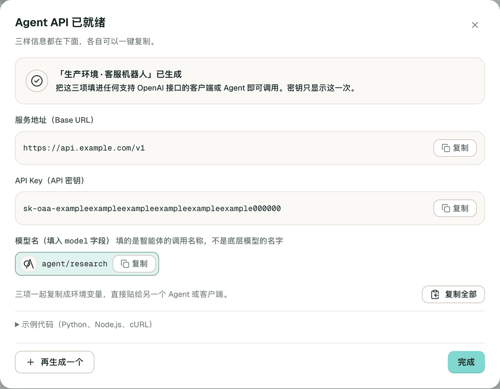
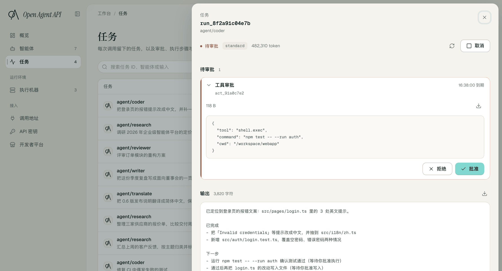

#workbench
交互对话与调试工作台
在控制台直接开展多轮续接会话（previous_response_id），支持传图、实时折叠展示思考进度、会话内直接审批、自定义 Schema
模拟外层桥接工具，并一键导出四协议 SDK 代码。
开源 · 自托管 · Apache-2.0 · v0.0.70
你调度的不是裸模型，而是自带工具、项目记忆与权限边界的完整智能体——一次调用，交付一个任务。原生兼容 OpenAI、Claude、Gemini 官方 SDK 与 MCP，业务代码只需换上 Base URL 和 API Key。

两行接入
沿用项目里现成的官方 SDK，把 base_url 指向你的网关、把
model
换成智能体调用名，原本的单轮补全就升级为带工具循环的完整任务。
from openai import OpenAI client = OpenAI( base_url="https://api.openai.com/v1", api_key=OPENAI_API_KEY, base_url="http://127.0.0.1:8787/v1", # 指向你的本地或私有网关 api_key="sk-oaa-…", # 控制台签发的专属密钥) resp = client.chat.completions.create( model="gpt-4.1", model="agent/research", # 填写智能体的调用名 messages=[{"role": "user", "content": "核对这三份供应商报价单并标出差异项"}],)print(resp.choices[0].message.content)import OpenAI from 'openai'; const client = new OpenAI({ baseURL: 'https://api.openai.com/v1', apiKey: process.env.OPENAI_API_KEY, baseURL: 'http://127.0.0.1:8787/v1', // 指向你的网关 apiKey: process.env.OAA_API_KEY, // 控制台创建的密钥}); const resp = await client.responses.create({ model: 'gpt-4.1', model: 'agent/coder@best', // 支持 @fast / @best / @eco 选路 input: '跑一遍鉴权模块单测，定位偶发超时原因',});console.log(resp.output_text);import Anthropic from '@anthropic-ai/sdk'; const anthropic = new Anthropic({ baseURL: 'http://127.0.0.1:8787', // 原生兼容 /v1/messages apiKey: process.env.OAA_API_KEY,}); const msg = await anthropic.messages.create({ model: 'agent/research', max_tokens: 2048, messages: [{ role: 'user', content: '检索项目记忆，汇总上周架构评审结论' }],});console.log(msg.content);from google import genai client = genai.Client( api_key="sk-oaa-…", http_options={"base_url": "http://127.0.0.1:8787"}, # 原生兼容 v1beta) resp = client.models.generate_content( model="agent/research", contents="解析附件架构图，按 JSON Schema 输出风险清单",)print(resp.text)curl http://127.0.0.1:8787/v1/responses \ -H "Authorization: Bearer $OAA_API_KEY" \ -H "Content-Type: application/json" \ -d '{ "model": "agent/research", "input": "对比近两个版本的变更日志，提炼破坏性更新" }'服务地址（Base URL）、API 密钥与智能体调用名。在控制台签发密钥后，结果弹窗会将三项整齐列出，支持逐项复制或一键复制为环境变量。
model
字段填写的是 agent/research
这类智能体标识；底层走哪条模型线路、挂载哪些技能、允许读写哪个工作区目录，均在发布端统一配置。
http://127.0.0.1:8787/v1
sk-oaa-…
agent/research

快速部署
所有安装路径最终都汇聚到 oaa quickstart：在本地
127.0.0.1:8787
启动网关、发布离线示例智能体并跑完第一次调用，全程无需预先配置云端模型密钥。
统一基于 Electron 安全沙箱外壳构建，内置 Node.js 24 运行时、控制台、实时审批角标与系统托盘快捷审批小窗。
非 root 运行，状态持久化在 /data 卷且仅绑定宿主机回环端口，适合托管内置智能体与远程节点：
docker compose up --build -d
在已构建的仓库目录中，运行本地示例：
npm run oaa -- quickstart
各平台安装包结构、首次打开未签名包的系统放行提示以及完整卸载步骤，见
安装指南。准备接入自有模型时，运行
oaa connect <预设>
即可一键连通主流云厂商或本地运行器。
核心机制
01
分发的是封装好工具链、项目记忆、模型选路与权限边界的完整执行体。单次请求对应一个可追踪任务：包含多轮工具循环、流式思考进度与最高 256 MiB 的流式文件产物，支持幂等键、取消与断点恢复。
02
面向 OpenAI、Claude、Gemini 原生下推 JSON Schema 与
tool_choice
强制工具契约，输出失格自动触发修正轮。当调用方（如 Cursor、Cline 或业务服务）自带
tools 时，网关可通过
oaa-caller 将调用透明桥接回调用方执行。
03
涉及写文件或执行命令的操作会让任务精准停在「待审批」状态，而非转瞬即逝的弹窗。你在控制台、桌面托盘、CLI 或自有系统的签名 Webhook 里拍板后，同一个任务从挂起点接着往下跑。
读取工作区与鉴权模块变更
定位 src/auth/login.ts 中的 3 处提示文案并生成单测草稿 · 120 ms
检索项目记忆（SQLite FTS5）
命中「错误码返回规范」与「鉴权测试隔离约定」2 条记忆条目 · 48 ms
工具审批：npm test -- --run auth
请求在工作区执行 shell.exec · 等待人工确认
任务挂起在检查点，点击上方「批准并继续」或「拒绝」查看后续流转…
28 项鉴权单测全部通过，同一任务续跑完成
已输出补丁摘要与测试报告产物，流式响应正常收尾 · 总耗时 1.9 s
未触碰宿主机命令，切换只读静态检查收尾
智能体依据拒绝信号跳过命令执行，返回静态补丁建议供人工复核

工作台与编排
除了充当无头 API 网关，0.0.70 还内置了完整的交互调试台、双通道本机生态注入、跨智能体自动选路与持久化工作流引擎。
在控制台直接开展多轮续接会话（previous_response_id），支持传图、实时折叠展示思考进度、会话内直接审批、自定义 Schema
模拟外层桥接工具，并一键导出四协议 SDK 代码。
自动检测本机工具链，支持向 OpenCode、Codex、DSH 注入自定义 API 提供方，或向
Cursor、Windsurf、Claude Desktop、Claude Code 一键配置 MCP 桥——统一引用
0600 私有密钥文件，零明文落盘且支持无损回滚。
支持 @fast / @best /
@eco 与
recommend 自动选路，通过
helpers
编排多智能体分工流水线并传递阶段产物；内置零依赖 SQLite FTS5
项目记忆检索，支持时区级 Cron 与入站 Webhook 触发器。
macOS、Windows 与 Linux 共享统一 Electron 安全沙箱桌面端，无需呼出主窗口即可在系统托盘小窗一键审批；自动扫描识别 Ollama、LM Studio、llama.cpp、vLLM 等 7 类本地运行器并发布为智能体。
生态连接
无论是用 OAA-Lang 编写的内置智能体，还是机器上已装好的编程智能体，都能保留原有技能与登录态，统一映射为标准 API。
各引擎在流式粒度、工具隔离与 POSIX 多槽位并发沙箱上的完整能力对照，见 接入外部智能体 与 双层 Harness 指南。
团队与分发
在控制台一键开启「开发者平台」，团队成员或外部调用方即可在独立门户自助注册、管理个人密钥，并按任务配额调用你上架的智能体。
host_execution 并全程留存审计记录。

工程基线
用可复现的自动化门禁与真机验收记录说明当前能力基线，同时保持克制、透明的系统边界。
any 类型门禁。
oaa verify
全 11 场景与平台计费闭环）、Antigravity 1.5.10（原生与
agy acp 强制工具桥接及链路追踪）与 Codex
0.167.0（流式、优雅中断与自动编排）。
SIGKILL 崩溃恢复核验；POSIX
环境内置按调用方隔离的多槽位 srt 沙箱并发池。
srt 沙箱策略，Windows
暂不含本地沙箱）；桌面安装包默认未附商业签名公证。
oaa verify <agent>
在本机对自有智能体与云端模型运行标准验收，生成脱敏报告以持续扩充实测矩阵。
带日期、版本号与原始测量数据的完整记录，见 验证证据档案 与 稳定性与数据保留说明。
默认仅监听本地回环端口，零外部基础设施依赖，无需预先准备云端模型密钥即可体验完整调用链路。
npm run oaa -- quickstart